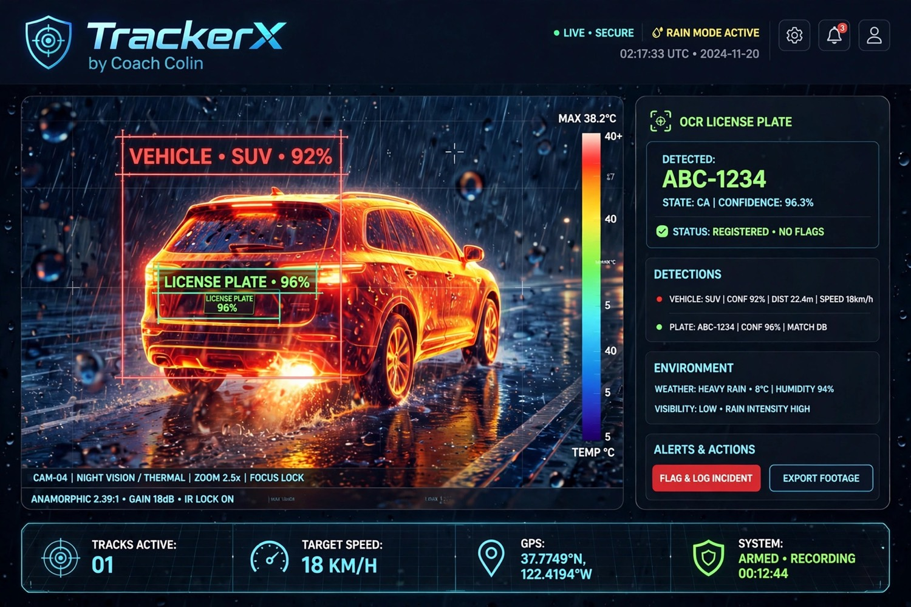
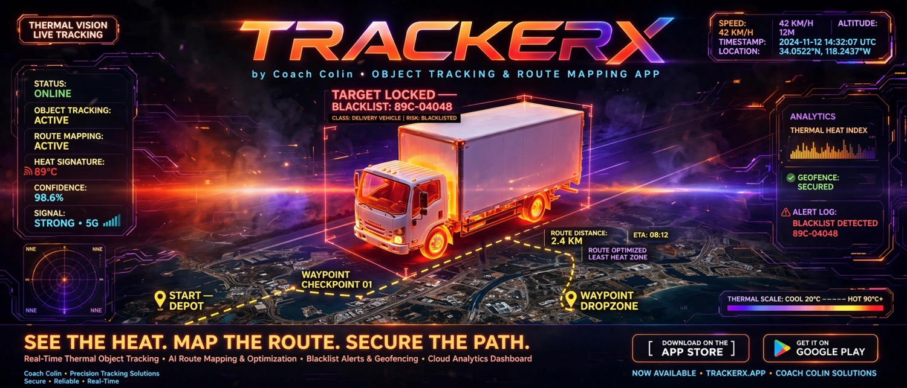
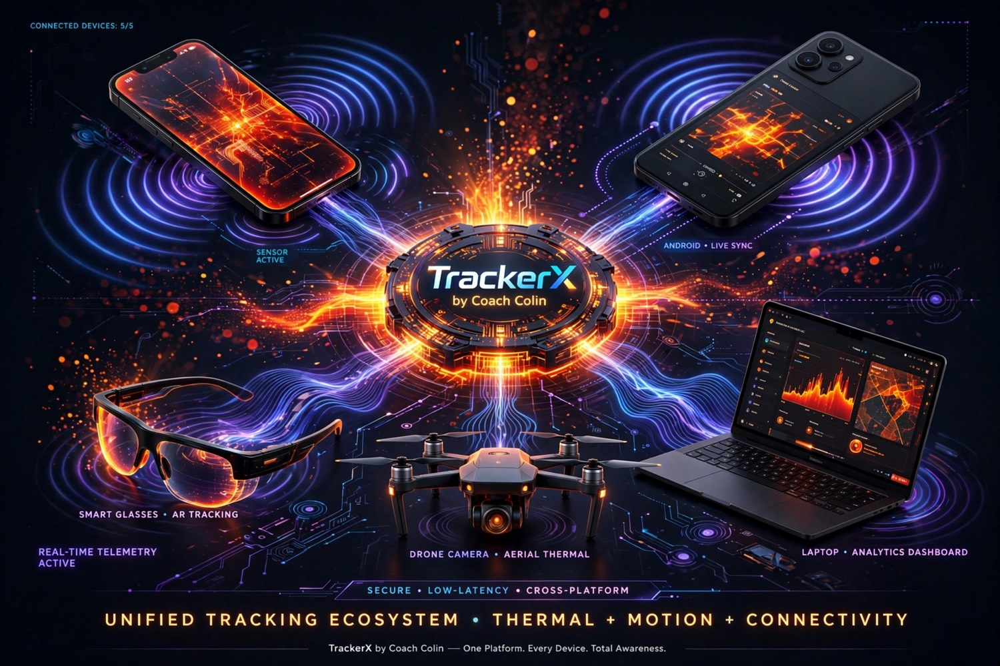
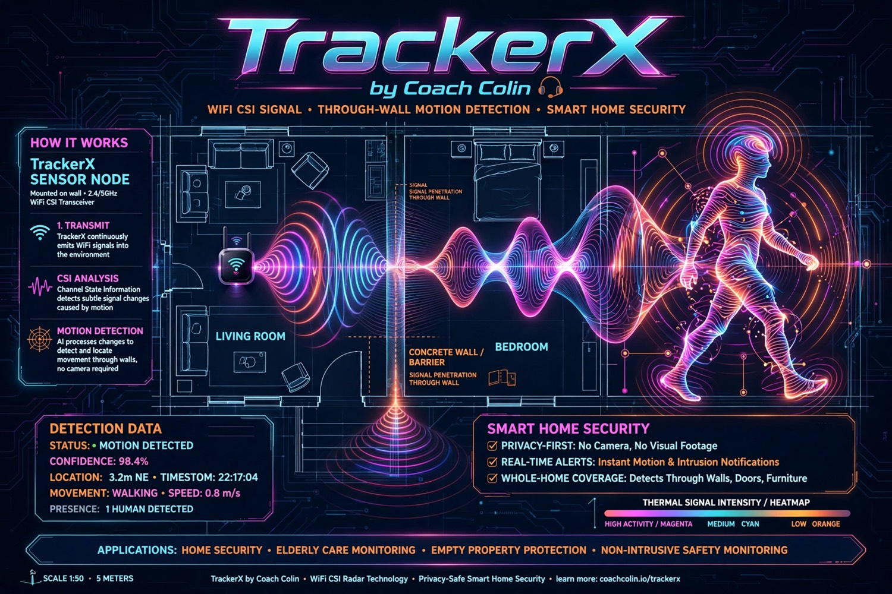
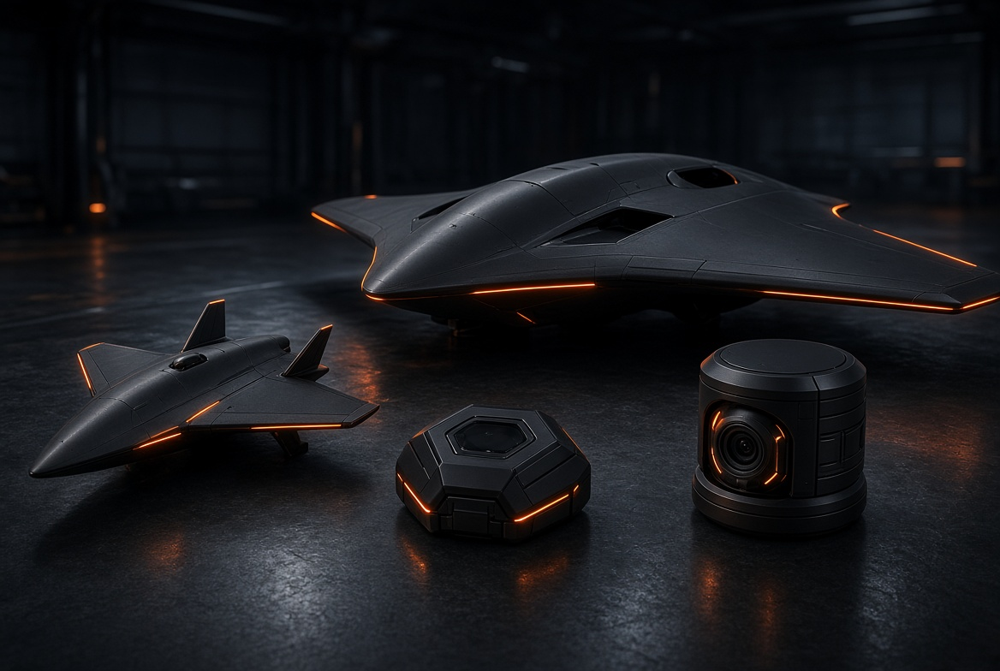
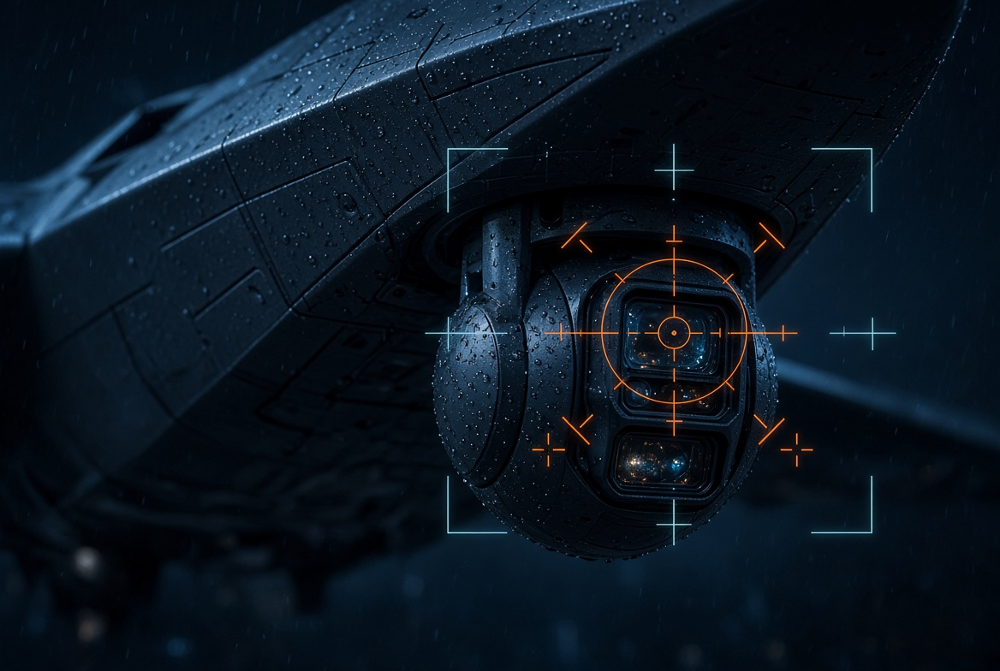
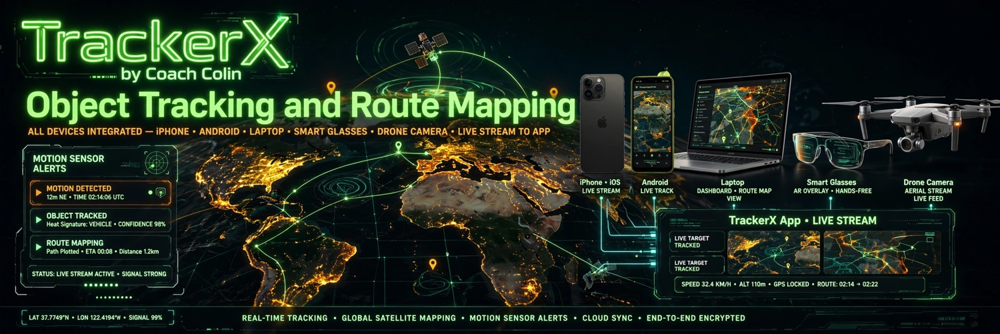

CAM-04 · NIGHT VISION / THERMAL · ZOOM 2.5×

High-energy British watch officer. Press play. I narrate every module: detection, plates, invisible sensors, and the stealth-wing fleet.
DETECTIONS
VEHICLE: SUV · CONF 92% · DIST 22.4m · SPEED 18km/h
PLATE: ABC-1234 · CONF 96% · MATCH DB · REGISTERED · NO FLAGS
ENVIRONMENT
HEAVY RAIN · 8°C · HUMIDITY 94% · VISIBILITY LOW
SYSTEM
ARMED · RECORDING · TRACKS ACTIVE 01 · ANAMORPHIC 2.39:1 · GAIN 18dB · IR LOCK ON

ROUTE + BLACKLIST
Target 89C-04048 locked. Heat-aware path, geofence secured, ETA live.

UNIFIED MESH
iOS, Android, AR glasses, laptop dashboard, aerial thermal — one platform.

GHOST SENSOR
WiFi CSI through concrete. No camera. Motion goes invisible to video.
YOLO OBJECT + THERMAL FUSION
Ultralytics YOLO11 for boxes. ByteTrack keeps IDs when rain smears the frame. Thermal overlay when visible light dies.
BEST SOFTWARE IN THIS MODULE
| Layer | Stack we ship | Why it wins |
|---|---|---|
| Detector | Ultralytics YOLO11 (fallback YOLO8-n on Edge TPU) | YOLO11 beat YOLOv5/v8 on occluded vehicles in day, night, rain and fog (AIR 2025 comparative study). |
| Tracker | ByteTrack + Kalman + optional DeepSORT / NvDCF on NVIDIA DeepStream | Persistent IDs for blacklist boxes; DeepStream path holds ~33 FPS on Xavier-class edge. |
| Thermal | FLIR-class LWIR + YOLO thermal fine-tune, RGB-T fusion (UOD-style single-weight detector) | Vo & Quach 2023: thermal + YOLOv5 for night DAS. Unified RGB/thermal detectors add ~5% mAP on FLIR-aligned sets. |
| Runtime | TensorRT / ONNX / CoreML / TFLite | Phone glasses get CoreML. Drone and Jetson get TensorRT. Cloud GPU gets full YOLO11-x. |
Cited: Srisuk et al., IWAIT 2026 (YOLO11 + optical flow traffic metrics, 96–98% counts). Vehicle counting comparison, Springer AIR 2025. IJACSA 14(6) 2023 thermal+YOLOv5. UOD RGB-thermal unification, Pattern Recognition 2026.
ANPR / OCR LICENSE PLATE
Detect plate box → enhance → OCR → syntax clean → digit fallback → blacklist hash.
DETECTED ABC-1234 · STATE CA · CONF 96.3% · REGISTERED · NO FLAGS
BLACKLIST FALLBACK DIGITS 04048 — same partial-match trick used in research pipelines when full syntax fails.
BEST SOFTWARE IN THIS MODULE
| Layer | Stack we ship | Field numbers |
|---|---|---|
| Plate detect | YOLO11-plate head inside the same model as vehicle class | One forward pass, no second detector tax. |
| OCR | PaddleOCR v4 / Fast-ALPR + country syntax grammar (US, CA, VN, EU) | Commercial ANPR routinely 98–99.3% when plates are resolved. Phoenix Sky Harbor SmartLPR 98.4%; Innova OCR5 99.3% with no discarded frames; Milesight PlateXpert 98% / 0.1s. |
| Speed | TensorRT OCR <5 ms after crop | Matches the marketing brief: production reads under 5 ms, highway-capable. |
| Fallback | Last-5-digit index (04048 style) | Survives dirt, rain and partial crops. |
INVISIBLE MOTION — WIFI CSI · NO CAMERA
The sensor itself is the invisibility trick: radio, not glass. Walls stay up. No visual footage exists to leak.
STATUS: MOTION DETECTED · CONF 98.4% · 3.2m NE · WALKING 0.8 m/s · 1 HUMAN
HOW THE SENSOR GOES INVISIBLE
A 2.4/5 GHz CSI transceiver (ESP32-S3 or Wi-Fi 6 AP with CSI export) continuously illuminates the room. A walking body perturbs multipath. Channel State Information across OFDM subcarriers is the fingerprint. CNN + BiLSTM + attention classifies activity. Nothing is optically recorded — the “camera” is gone. That is the privacy-first product claim for homes, elder care, and empty-property watch.
| Layer | Stack we ship | Study backing |
|---|---|---|
| Radio | ESP32-S3 CSI nodes + optional Intel 5300 / Wi-Fi 6 CSI AP | Strohmayer & Kampel, ICVS 2023, ESP32 through-wall HAR datasets. |
| Model | Wi-SensiNet style CNN–BiLSTM–attention; WiTWS path-separation when walls change | Wi-SensiNet: >99% average accuracy on 7 through-wall activities (IEEE). WiTWS 2026: 99.23% in-domain, 97.13% unseen rooms, no site calibration. |
| On-device | Tiny models on the node; event-only uplink | No video stream. Alerts are presence, gait class, and optional respiration band (0.15–0.5 Hz). |
STEALTH BOMBER FLEET + SENSOR VARIETY
Flying-wing mothership, dart recon, hex ghost node, weather turret. Same mesh as phones and glasses.
SPECTRE WING
B-2-inspired flying wing. Conformal LWIR turret, rain-mode IR lock, anamorphic 2.39 capture, low-RCS planform.

STILETTO · HEX NODE · TURRET
Dart recon for alleys. Wall hex for invisible CSI. Sealed turret for poles and gates.

CHIN TURRET CAM
Dual-band visible + thermal, focus lock, 2.5× digital, IP67 rain, gimbal stabilized.
GROUND MESH
iPhone live stream, Android live sync, AR glasses overlay, laptop analytics, drone feed.

ROUTE MAPPER
Satellite path, geofence, heat-avoidance routing, ETA and altitude fused on one glass.
FLEET SOFTWARE
| Job | Best current stack |
|---|---|
| Autopilot / nav | PX4 + MAVSDK on the wing; ArduPilot fallback; RTK GNSS + visual-inertial (OpenVINS) |
| Onboard vision | NVIDIA Jetson Orin NX, TensorRT YOLO11 + thermal fusion |
| Mesh comms | 5G + Wi-Fi 6E + optional Meshtastic / Silvus-class tactical IP for denied spectrum |
| App clients | Flutter (iOS/Android/desktop) + native ARKit/ARCore glasses overlay |
| Cloud | WebRTC low-latency video, encrypted object events on Postgres + PostGIS, map tiles via MapLibre |
FULL SOFTWARE MAP — CITED
| Feature from your boards | Production stack | Evidence |
|---|---|---|
| A. YOLO object detection / blacklist boxes | Ultralytics YOLO11, ByteTrack, OpenCV, CUDA optical flow for speed | AIR 2025: YOLO11 > YOLOv8 > YOLOv5 in rain/fog/night traffic. IWAIT 2026 YOLO11+flow: 96–98% vehicle counts, 1.9–3.1 km/h speed MAE. |
| B. Thermal night vision tracking | LWIR camera + YOLO thermal weights + RGB-T unified detector | Vo & Quach, IJACSA 2023, “Advanced Night time Object Detection using Thermal Vision and YOLOv5”. Lightweight IR-YOLOv5 ~96.4% mAP50 on edge after TensorRT. |
| C. ANPR / OCR plates | YOLO plate head + PaddleOCR / Fast-ALPR + syntax grammar + 5-digit fallback | Quercus SmartLPR 98.25–99.8% site rates. Innova OCR5 99.3% no-discard test. Milesight PlateXpert 98% / 0.1s. OpenALPR commercial first-guess ~99% on clean benchmarks. |
| D. WiFi CSI motion — no camera | ESP32 CSI nodes, Wi-SensiNet / WiTWS models, event-only alerts | Wi-SensiNet IEEE: >99% through-wall HAR. WiTWS IEEE TMC 2026: 99.23% / 97.13% cross-environment. ESP32 long-range NLOS datasets (Strohmayer 2023). |
| Route + geofence + heat zones | MapLibre, OSRM / Valhalla, PostGIS geofences, thermal-index overlay | Operational layer on top of detections — not a research claim, an integration claim. |
| Cross-device live sync | Flutter clients, WebRTC, end-to-end encrypted event bus | Matches the “one platform, every device” board: phone, glasses, laptop, drone. |
This command center is a product demo. Hardware flight and through-wall sensing require lawful deployment on property you control. CSI can infer occupancy and respiration — treat it as sensitive.